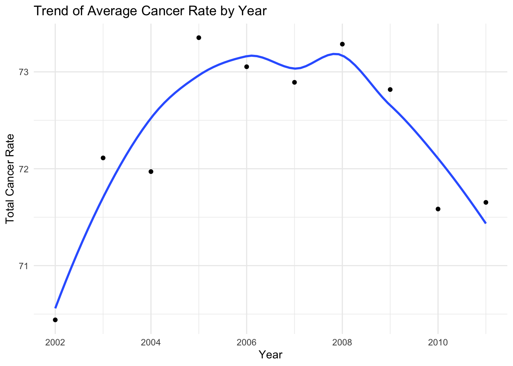
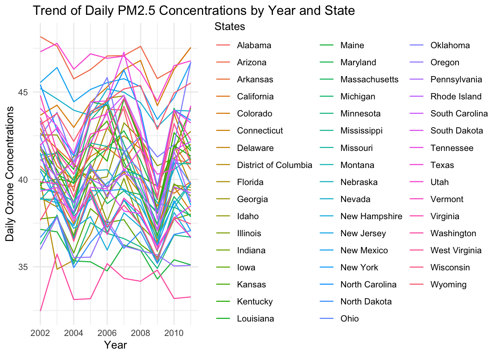

Code
library(dplyr)
library(ggplot2)
library(sf)
library(choroplethr)
library(parcoords)
library(gridExtra)
library(plotly)Load required libraries
library(dplyr)
library(ggplot2)
library(sf)
library(choroplethr)
library(parcoords)
library(gridExtra)
library(plotly)Merge cancer, PM2.5, and Ozone data by year and states.
cancer <- read.csv('cancer.csv')
#unique(cancer$Leading.Cancer.Sites)
cancer$Count <- as.numeric(as.character(cancer$Count))Warning: NAs introduced by coercioncancer$Crude.Rate <- as.numeric(cancer$Crude.Rate)Warning: NAs introduced by coercioncancer <- na.omit(cancer)
lung_df = cancer[cancer['Leading.Cancer.Sites'] == 'Lung and Bronchus',]
pm <- read.csv("https://data.cdc.gov/resource/7vdq-ztk9.csv?$query=SELECT%0A%20%20%60year%60%2C%0A%20%20%60statefips%60%2C%0A%20%20max(%60pm25_max_pred%60)%20AS%20%60max_pm25_max_pred%60%2C%0A%20%20avg(%60pm25_pop_pred%60)%20AS%20%60avg_pm25_pop_pred%60%0AGROUP%20BY%20%60year%60%2C%20%60statefips%60")
ozone <- read.csv("https://data.cdc.gov/resource/kmf5-t9yc.csv?$query=SELECT%0A%20%20%60year2%60%2C%0A%20%20%60statefips%60%2C%0A%20%20max(%60o3_max_pred%60)%20AS%20%60max_o3_max_pred%60%2C%0A%20%20avg(%60o3_pop_pred%60)%20AS%20%60avg_o3_pop_pred%60%0AGROUP%20BY%20%60year2%60%2C%20%60statefips%60")
pm$year <- as.numeric(pm$year)
ozone$year2 <- as.numeric(ozone$year2)
pm_df <- pm %>% filter(year >= 2002 & year <= 2011)
ozone_df <- ozone %>% filter(year2 >= 2002 & year2 <= 2011)
pm_df <- pm_df[,c('year','statefips','avg_pm25_pop_pred')]
ozone_df <- ozone_df[,c('year2','statefips','avg_o3_pop_pred')]
cancer_df <- lung_df[,c('States.Code','States',"Year","Count")]
cancer_df <- cancer_df %>%
group_by(States, Year) %>%
mutate(total_cancer_count = sum(Count, na.rm = TRUE)) %>%
ungroup()
cancer_df <- cancer_df[,c('States.Code','States','Year','total_cancer_count')]
cancer_df <- cancer_df %>% distinct()
merged_data <- cancer_df %>%
inner_join(pm_df, by = c("States.Code" = "statefips", "Year" = "year"))
merged_data <- merged_data %>%
inner_join(ozone_df, by = c("States.Code" = "statefips", "Year" = "year2"))
write.csv(merged_data, "merged_DATA.csv")
merged_data# A tibble: 489 × 6
States.Code States Year total_cancer_count avg_pm25_pop_pred avg_o3_pop_pred
<int> <chr> <dbl> <dbl> <dbl> <dbl>
1 1 Alaba… 2002 3627 11.9 40.8
2 1 Alaba… 2003 3564 12.3 39.7
3 1 Alaba… 2004 3804 12.3 39.6
4 1 Alaba… 2005 3766 13.1 41.5
5 1 Alaba… 2006 3829 13.0 44.0
6 1 Alaba… 2007 3867 13.5 44.0
7 1 Alaba… 2008 4130 11.5 40.6
8 1 Alaba… 2009 4051 9.75 36.8
9 1 Alaba… 2010 4037 10.6 41.2
10 1 Alaba… 2011 4018 10.3 40.9
# ℹ 479 more rowsWe want to identify long-term increases or decreases in the lung and bronchus cancer incidences for each state in US. The following line plots show that lung and bronchus cancer counts is generally increasing from 2001 to 2010 for all states.
result_by_states <- lung_df %>%
group_by(States, Year) %>%
summarize(total_cancer_count = sum(Count, na.rm = TRUE))`summarise()` has grouped output by 'States'. You can override using the
`.groups` argument.result_total <- lung_df %>%
group_by(Year) %>%
summarize(total_cancer_count = sum(Count, na.rm = TRUE))
#result_by_states
#result_totalggplot(result_by_states, aes(x = Year, y = total_cancer_count, group = States, color = States)) +
geom_line() +
labs(title = "Trend of Cancer Counts by Year and State",
x = "Year",
y = "Total Cancer Count") +
theme_minimal() +
scale_color_viridis_d()
ggplot(result_total, aes(x = Year, y = total_cancer_count)) +
geom_line() +
labs(title = "Trend of Cancer Counts by Year and State",
x = "Year",
y = "Total Cancer Count") +
theme_minimal() +
geom_smooth(method = "loess", span = .7, se = FALSE)`geom_smooth()` using formula = 'y ~ x'
g <- ggplot(result_total, aes(x = Year, y = total_cancer_count)) + geom_point()
g + geom_smooth(method = "loess", span = .7, se = FALSE)`geom_smooth()` using formula = 'y ~ x'We want to identify long-term increases or decreases in daily PM2.5 concentrations from 2001 to 2016 for each state in US. The following line plots show that daily PM2.5 concentrations is generally decreasing for all states.
ggplot(merged_data, aes(x = Year, y = avg_pm25_pop_pred, color = States)) +
geom_line() +
labs(title = "Trend of Daily PM2.5 Concentrations by Year and State",
x = "Year",
y = "Daily PM2.5 Concentrations") +
theme_minimal() +
scale_color_viridis_d()
avg_pm_per_year <- pm %>%
group_by(year) %>%
summarise(average_pm25 = mean(avg_pm25_pop_pred))
g <- ggplot(avg_pm_per_year, aes(year, average_pm25)) +
geom_line() +
ggtitle("Average Daily PM2.5 Concentrations in US, 2001-2016") +
xlab("2001-2016")
g + geom_smooth(method = "loess", span = .7, se = FALSE)`geom_smooth()` using formula = 'y ~ x'We want to identify long-term increases or decreases in daily Ozone concentrations from 2001 to 2016 for each state in US. The following line plots show no pattern for increasing or decreasing in daily Ozone concentrations for all states. The changes of ozone concentration are subtle.
ggplot(merged_data, aes(x = Year, y = avg_o3_pop_pred, color = States)) +
geom_line() +
labs(title = "Trend of Daily PM2.5 Concentrations by Year and State",
x = "Year",
y = "Daily Ozone Concentrations") +
theme_minimal() +
scale_color_viridis_d()
avg_o3_per_year <- ozone %>%
group_by(year2) %>%
summarise(average_o3 = mean(avg_o3_pop_pred))
g <- ggplot(avg_o3_per_year, aes(year2, average_o3)) +
geom_line() +
ggtitle("Average Daily Ozone Concentration in US, 2001-2016") +
xlab("2001-2016")
g + geom_smooth(method = "loess", span = .7, se = FALSE)`geom_smooth()` using formula = 'y ~ x'
##Spatial Analysis
###Cancer We want to identify some geographical patterns of lung and bronchus cancer incidences for each state in US. The following choropleth maps use color to indicate the value of cancer incidences within each state. Deep color indicates more cancer incidences. Top states with higher cancer incidences are the same from 2001 to 2011.
result_by_states$region <- result_by_states$States
result_by_states$value <- result_by_states$total_cancer_count
#result_by_states<-result_by_states[,c('region','value','Year')]
result_by_states <- na.omit(result_by_states)
result_by_states <- result_by_states %>%
transmute(region = tolower(`region`), value = value, year = Year)
#result_by_statesfor (year in 2002:2011) {
# Subset data for the specific year
yearly_data <- result_by_states[result_by_states$year == year, ]
yearly_data <- yearly_data[, c('region', 'value')]
# Create and plot the choropleth map
map_title <- paste("State Cancer - Year", year)
map <- state_choropleth(yearly_data,
title = map_title,
legend = "Total Count")
print(map)
}Warning in self$bind(): The following regions were missing and are being set to
NA: mississippi


We want to identify some geographical patterns of PM2.5 concentrations for each state in US. The following choropleth maps use color to indicate the value of population weighted averaged PM2.5 concentrations in μg/m3 for each state. Deep color indicates higher PM2.5 concentrations. Ohio and Indiana have leading PM2.5 concentrations every year from 2001 to 2011.
spatial_pm <- merged_data %>%
transmute(region = tolower(States), value = avg_pm25_pop_pred, year = Year)
for(year in unique(spatial_pm$year)) {
df_year <- spatial_pm[spatial_pm$year == year, ]
df_year$value <- as.numeric(df_year$value)
map <- state_choropleth(df_year,
title = paste("Daily Average PM2.5 Concentrations All States, ", year),
legend = "Daily Average PM2.5")
print(map)
}Warning in self$bind(): The following regions were missing and are being set to
NA: mississippi, alaska, hawaiiWarning in self$bind(): The following regions were missing and are being set to
NA: alaska, hawaii
Warning in self$bind(): The following regions were missing and are being set to
NA: alaska, hawaii
Warning in self$bind(): The following regions were missing and are being set to
NA: alaska, hawaii
Warning in self$bind(): The following regions were missing and are being set to
NA: alaska, hawaii
Warning in self$bind(): The following regions were missing and are being set to
NA: alaska, hawaiiWarning in self$bind(): The following regions were missing and are being set to
NA: alaska, hawaiiWarning in self$bind(): The following regions were missing and are being set to
NA: alaska, hawaiiWarning in self$bind(): The following regions were missing and are being set to
NA: alaska, hawaii
Warning in self$bind(): The following regions were missing and are being set to
NA: alaska, hawaii

We want to identify some geographical patterns of Ozone concentrations for each state in US. The following choropleth maps use color to indicate the value of population weighted averaged and yearly averaged 8-hour average ozone concentration in parts per billion within 3 meters of the surface of the earth for each state. Deep color indicates higher Ozone concentrations. Utah, Arizona, and New Mexico have leading PM2.5 concentrations every year from 2001 to 2011.
spatial_o3 <- merged_data %>%
transmute(region = tolower(States), value = avg_o3_pop_pred, year = Year)
for(year in unique(spatial_o3$year)) {
df_year <- spatial_o3[spatial_o3$year == year, ]
df_year$value <- as.numeric(df_year$value)
map <- state_choropleth(df_year,
title = paste("Daily Ozone Concentrations All States, ", year),
legend = "Daily Average PM2.5")
print(map)
}Warning in self$bind(): The following regions were missing and are being set to
NA: mississippi, alaska, hawaiiWarning in self$bind(): The following regions were missing and are being set to
NA: alaska, hawaii
Warning in self$bind(): The following regions were missing and are being set to
NA: alaska, hawaii
Warning in self$bind(): The following regions were missing and are being set to
NA: alaska, hawaii
Warning in self$bind(): The following regions were missing and are being set to
NA: alaska, hawaii
Warning in self$bind(): The following regions were missing and are being set to
NA: alaska, hawaii
Warning in self$bind(): The following regions were missing and are being set to
NA: alaska, hawaii
Warning in self$bind(): The following regions were missing and are being set to
NA: alaska, hawaii
Warning in self$bind(): The following regions were missing and are being set to
NA: alaska, hawaii
Warning in self$bind(): The following regions were missing and are being set to
NA: alaska, hawaii

##Correlations between lung and bronchus cancer rates and PM2.5/Ozone concentrations
To explore the correlations or how one variable changes with respect to the other between lung and bronchus cancer rates and PM2.5/Ozone concentrations, we used scatter plot, pearson test, and interactive parallel coordinate plot. The following line of best fit in scatter plot shows that lung and bronchus cancer rates and PM2.5 are positively correlated, for points with higher PM2.5 concentration, it also has higher cancer rate.
ggplot(merged_data, aes(x = avg_pm25_pop_pred, y = total_cancer_count)) +
geom_point() +
geom_smooth(method = "lm", se = FALSE) +
labs(title = "Scatter Plot of Cancer Counts vs PM2.5", x = "Average PM2.5", y = "Total Cancer Count")`geom_smooth()` using formula = 'y ~ x'
The following line of best fit in scatter plot gives no correlation between lung and bronchus cancer rates and ozone concentration, for points with high ozone concentration, lung and bronchus cancer rate can be both high or low.
ggplot(merged_data, aes(x = avg_pm25_pop_pred, y = total_cancer_count)) +
geom_point() +
geom_smooth(method = "lm", se = FALSE) +
labs(title = "Scatter Plot of Cancer Counts vs Ozone",
x = "Average Daily Ozone Concentration",
y = "Total Cancer Count")`geom_smooth()` using formula = 'y ~ x'
ggplot(merged_data, aes(avg_pm25_pop_pred, y = total_cancer_count)) +
geom_hex(bins=12) +
scale_fill_gradient(low = "grey", high = "purple") +
theme_classic(18) +
ggtitle("Heatmap of Cancer Counts vs PM2.5")
ggplot(merged_data, aes(avg_o3_pop_pred, y = total_cancer_count)) +
geom_hex(bins=12) +
scale_fill_gradient(low = "grey", high = "purple") +
theme_classic(18) +
ggtitle("Scatter Plot of Cancer Counts vs Ozone")
The Pearson correlation test provides a coefficient (r) that quantifies the strength and direction of the linear relationship between two continuous variables. For value close to 0, like -0.04076092 for cancer rates and ozone concentration, it implies no linear correlation. For value close to 1, it indicates positive linear correlation.
correlation_test_pearson <- cor.test(merged_data$total_cancer_count, merged_data$avg_pm25_pop_pred, method = "pearson")
print(correlation_test_pearson)
Pearson's product-moment correlation
data: merged_data$total_cancer_count and merged_data$avg_pm25_pop_pred
t = 6.2149, df = 487, p-value = 1.104e-09
alternative hypothesis: true correlation is not equal to 0
95 percent confidence interval:
0.1868981 0.3513058
sample estimates:
cor
0.2710779 correlation_test_pearson <- cor.test(merged_data$total_cancer_count, merged_data$avg_o3_pop_pred, method = "pearson")
print(correlation_test_pearson)
Pearson's product-moment correlation
data: merged_data$total_cancer_count and merged_data$avg_o3_pop_pred
t = -0.90026, df = 487, p-value = 0.3684
alternative hypothesis: true correlation is not equal to 0
95 percent confidence interval:
-0.12896706 0.04808514
sample estimates:
cor
-0.04076092 merged_data %>%
select(c("States","total_cancer_count","avg_pm25_pop_pred","avg_o3_pop_pred")) %>%
arrange(merged_data) %>%
parcoords(rownames = FALSE,
brushMode = "1D-axes",
color = list(colorBy = "Region",
colorScale = "scaleOrdinal",
colorScheme = "schemeCategory10"),
alpha = 0.5,
withD3 = TRUE,
width = 770,
height = 600)